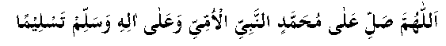

Hadhrat Abu Hurayrah (RA) narrates that Rasulullah (sallallahu alayhi wasallam) said, "Sending durood upon me will be a light on the Bridge. Whoever sends durood upon me eighty times on Friday, eighty years of his sins are forgiven." In a ḥadīth of Hadhrat Abu Hurayrah (RA), it is mentioned that whoever recites the following durood eighty times before getting up from his place after aṣr salaah on Friday, eighty years of his sins will be forgiven and he will be granted the reward of eighty years of worship:

(O Allah, send durood upon Muḥammad (sallallahu alayhi wasallam), the unlettered Prophet (Sallallahu alayhi wassalam), and upon his family and send salaam.)
Hadhrat Alī (RA) has narrated that Rasulullah (Sallallahu alayhi wassalam) said, "Whoever sends one hundred durood upon me on Friday will have such light on the Day of Qiyaamah that it would be enough for the whole creation if it was to be distributed amongst them."